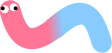

Sour Gummy was first created in 2018 by Stevie Justprince, but was recently updated to offer more versatility and style. the letters were designed to look like they were made of bubbles according to Justprince. The updated version now has a full range of uppercase and lowercase letters as well as numbers, punctuation, and special characters. It contains a total of 361 glyphs and support for 93 languages.
English, Spanish, French, German, Italian, Portuguese, Dutch, Swedish, Danish, Norwegian, Finnish, Polish, Czech, Slovak, Hungarian, Romanian, Bulgarian, Greek, Turkish, Arabic, Hebrew, Hindi, Bengali, Tamil, Telugu, Kannada, Malayalam, Thai, Vietnamese, Indonesian and many more.
Sour Gummy has two variable axes
AaBcCcDdEeFfGgHhIiJjKkLlMmNnOoPpQqRrSsTtUuVvWxYyZz
1234567890
!@#$%^&*()